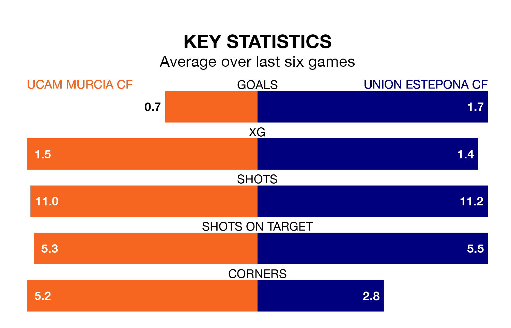

UCAM Murcia CF host Union Estepona CF on Sunday at Estadio de La Condomina in the Segunda División RFEF Group 4.
In their last league match, on March 16, UCAM Murcia lost to Manchego 2-1 away, with their goal scored by José Manuel Raigal Gil.
Union Estepona won, 4-1 at home against Vélez on March 17, with José Ignacio Goma Jiménez, Manuel Viana Martínez and Sergio Moreno Martínez on the scoresheet.
With 31 goals in 27 games so far this season, Union Estepona are scoring more than average in the league with 1.1 goals per game. And they are conceding fewer than average, letting in 21 goals at a rate of 0.8 per game.
UCAM Murcia, meanwhile, are average scorers, with 1.0 goal per game. They have conceded 1.1 goals per game.
The away side are fifth in the table after 27 games, of which they have won 12 and drawn seven, earning 43 points.
The hosts are four places behind Union Estepona in ninth, with nine wins and seven draws putting them on 34 points.
UCAM Murcia are in disappointing form in the Segunda División RFEF Group 4, with one win and three draws from their last six games.
With two wins and three draws over that period, Union Estepona's form is better – they have taken nine points from 18, compared to UCAM Murcia's six.
Updated: 10:19 (UTC), 22/03/24